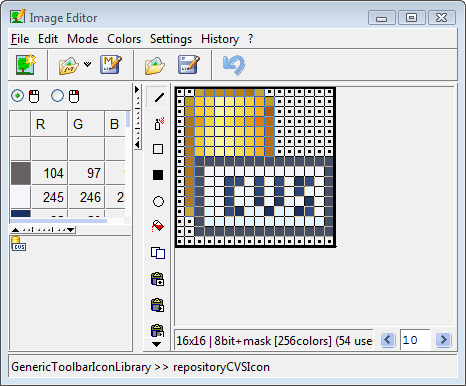

Commonly used and sharable images are found in the
GenericToolbarIconLibrary-class
and its view-style specific subclasses. Notice that the global variable
ToolbarIconLibrary
is dynamically rebound to one of the concrete libraries,
depending on the view style.
Programmers should not refer to images in one of the subclasses,
but instead always to ToolbarIconLibrary.
Image resource methods are usually invoked during the setup of an application instance, if an image has been specified for one of the above listed widgets. (for example, for a Label-widget, if the labelIsImage flag is turned on).
For enhanced performance, the generated resource methods remember their
generated bitmap image objects in a cache
(a dictionary inside the Icon class).
Within this cache, the resurce method's name (class plus selector) are used
as key.
When first invoked, the image is created from bitmap information and cached
for further calls. Be sure to flush this cache, if an image-resource method is modified
by hand and recompiled (the imageEditor does this automatically for you, when an image is saved).
To avoid large ST/X snapshot images (not to confuse with bitmap-images),
all cached bitmap images are deleted from this cache,
whenever an ST/X-snapshot image file is saved.
A typical resource method looks like:
Here, #'ImageEditor newImageEditor' is the identifier (key) for the cache dictionary, and the value in brackets represents the bitmapImage.newImageIcon "Generated by the Image Editor" "ImageEditor openOnClass:self andSelector: #newImageIcon" <resource: #image> ^Icon constantNamed:#'ImageEditor newImageEditor' ifAbsentPut:[(Depth4Image new) width: 22 height: 22; etc.]
Warning:
If you manually copy-paste such a resource method's code,
do not forget to modify this key in the source code. Otherwise, the cache slot
will be overwritten by the other image.
Alternatively, open an image editor on the old method's image, and save the image back into the
new resource method.

Image editors also appear as embedded editor in the new system browser, when the "Use Embedded Editors" option flag is enabled AND an image resource method has been selected.
The editor consists of 3 major parts:
Pressing the ESCAPE-key while still holding down the mouse button aborts a current draw operation. Also, the last few drawing operations can be undone by the toolbars "Undo" function.
The kind of draw function is selected by the "drawing mode". This can be changed either via the main menu, or one of the mode buttons in the central vertical mode toolbar.
The drawing functions (point, rectangle, fill) use the current selected drawing color (from the left color list).
Notice that both the first and the second mouse button can be used for drawing. Each has its own assigned drawing color, which is specified by selecting one of the colors in the colormap (select the button which is to be affected using one of the mouse-button icons above the color list).
Available special functions are:
| Menu | Button | Description |
| New Image Editor | Opens another Image Editor (useful to merge multiple images into one). | |
| New... | Opens a dialog with choices of size and color depth to create a new image. | |
| New From Clipboard | Loads the image contained in the clipBoard (see "Copy to ClipBoard" below). | |
| Load... | Opens a dialog for selecting and loading an image from a resource method of a class. | |
| Load from File... | Opens a dialog for selecting and loading an image from a file. | |
| Grab from Screen | Lets you pick a rectangular area on the screen. | |
| Save | Saves the image as resource method in the current class and selector. | |
| Save As... | Asks for class and selector and saves the image as resource method. | |
| Save to File... | Asks for fileName and saves the image into it (*). | |
| Save Mask to File... | Asks for fileName and saves the image's mask only into it. | |
| Copy to ClipBoard | Saves the image in the clipBoard (see "New from ClipBoard" above). | |
| Edit Menu | Description |
| Undo | Undo the last action. |
| Resize... | Opens a dialog to resize the image.
If its made larger, the new area will be empty, If its made smaller, the area will be chopped off. |
| Magnify... | Opens a dialog to magnify/shrink the image to a desired size. |
| Magnify By... | Opens a dialog to magnify/shrink the image by a factor. |
| Rotate... | Opens a dialog to rotate the image in degrees. |
| Flip | Flips the image vertically or horizontally. |
| Invert | Inverts the image (black/white). |
| Brighten | Brightenes the image. |
| Darken | Darkenes the image. |
| Crop... | Cut off margins of the image.
You may either manually specify the number of pixels which are to be chopped off, or use the autocrop function, which detects margins consisting of constant color. The autocrop function is useful to remove frames around images. |
| Uncrop... | Add a margin to the image. |
| Shift... | Opens a dialog to shift/rotate pixels horizontally or vertically. |
| Edit Mask | Opens another Image Editor on the mask-plane alone. |
| Text | Render a text-string into the image. |
| Next in Sequence | Edit the next image in an animated gif's image sequence. |
| Previous in Sequence | Edit the previous image in an animated gif's image sequence. |
| Edit each in Sequence | For each individual image in the image sequence, an extra editor is opened. |
| Colors-Depth Menu | Description |
| Depth - n-Plane | Converts the image to an n-plane colormap image.
You will get a warnBox, if the number of colors exceeds the available number of colorMap slots. |
| Depth - n-Plane + Mask | Converts the image to an n-plane colormap image
with an additional mask plane (transparent pixels). You will get a warnBox, if the number of colors exceeds the available number of colorMap slots. |
| Colors-Colormap Menu | Description |
| Compress ColorMap | Removes unneeded colors from the colorMap. |
| Sort ColorMap | Sorts the colorMap by red-green-blue. |
| Reduce number of colors by rounding | Reduces color resolution.
You will be asked for nearest r/g/b component values, to which colors will be rounded. This is useful when 24bit images are to be converted to n-plane palette images. |
| Reduce number of colors by masking | Reduces color resolution.
You will be asked for the number bits which are to be stripped off. This is useful when 24bit images are to be converted to n-plane palette images. |
| Dither to Depth | Using a standard color cube, generate a dithered
version of the image with reduced depth. |
| Brighten | Change the colormap to make the image brighter. |
| Darken | Change the colormap to make the image darker. |
| Invert | Change the colormap to invert the image
(this usually only makes sense for b&w or greyscale) images. |
| Colors-Edit Menu | Description |
| Convert to Greyscale | Converts the image to a greyscale image. |
| Brighten | Change the pixel values to make the image brighter. |
| Darken | Change the pixel values to make the image darker. |
| Invert | Change the pixel values to invert the image
(this usually only makes sense for b&w or greyscale) images. |
| Change Hue/Light/Saturation | Change the pixel values to shift the images h/l/s
within the color wheel. Can be used to change the images overall color appearance. (for example: make a green lamp from a red one.) |
| Colors-Mask Menu | Description |
| Copy Mask | Copy the mask to the clipboard. |
| Paste Mask | Paste the mask from the clipboard. |
| Clear Masked Pixels | Clear all masked pixels to a pixelvalue of 0. |
| Clear Colormap Entry for Masked Pixels | Clear all masked pixels to a pixelvalue of 0
and make sure that a black color is located at the colormap entry for 0. This is required for the win32 operating system's window icons. |
The mouse buttons are used for image modification (default: pixel drawing). For both left and right mouse buttons, a separate color can be defined. By switching the toggle menu items ColorMap-Left/Right-Mouse-Button, the drawing color of the button can be seen and defined.
You can also pick a color in the edited image, by clicking into the magnified
image view while holding down the SHIFT-key.
The set of colors which are used by a bitmap image are held in the image's
color map.
Depending on the size of the colormap, different classes are used to represent the image
Only bitmaps with a depth up to 8 do actually have a colormap,
Wide bitmaps (i.e. with 16, 24 or 32 bits per pixel)
can also be shown and edited; however, these do not have a colormap.
Instead, the pixels of the image directly define the r/g/b values of a pixel's color.
For those non-palette images, the used colors are shown in the colormap area.
| Color Depth (bits per pixel) | Number of Colors | Real Class |
| 1 | 1 - 2 | Depth1Image |
| 2 | 1 - 4 | Depth2Image |
| 4 | 1 - 16 | Depth4Image |
| 8 | 1 - 256 | Depth8Image |
The Image class is an abstract class. Depending on the size of the colormap, instances of one of the Depth*Image classes are used to represent the real image.
Defining your own initial colormap
The colormap of a new image is defined by the Image Editor's listOfColorMaps
class method. This method can be redefined if you prefer some other default
colormap.
All pixel edit functions treat the mask color like any other ordinary
color. In the color map, the mask color is always the first entry (if defined).
When an image with alpha channel is being edited, the current drawing alpha value (that is the alpha value attached to the drawn pixels) is shown in an additional input field above the colormap. If the mask-pseudo-color is selected for drawing, only the alpha value is applied to the pixel (i.e. the pixel color is unchanged by the drawing).
Notice - after all, this was written as an icon-editor - not as a general image manipulation program. For real image processing, we recommend tools like gimp, photoshop or a bitmap editor like ms-paint.
So, to prevent this, make sure that:

Copyright © 1992-2017 Claus Gittinger, all rights reserved
Copyright © 1998-2017 eXept Software AG, all rights reserved